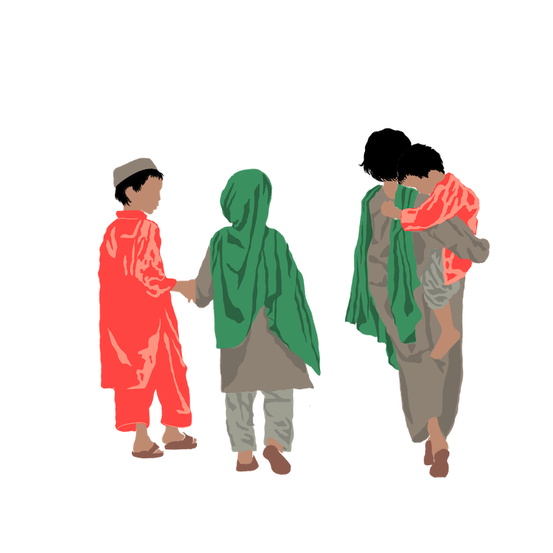

DET HASTER FOR BARNA I AFGHANISTAN
Lenge har Afghanistan vært et av verdensverste land å vokse opp i, og med dagenssituasjon står landet i en trippel krise.
Dette er hvorfor:
Etter at de allierte styrkene trakk seg ut avAfghanistan, tok Taliban igjen til makten. Sivilbefolkningen lever nå med en voldeligsituasjon som eskalerer seg time for time. Samtidig herjer covid-19 pandemien fortsatt,og det er nettopp blitt erklært tørke i landet.

Scroll videre